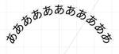

KAYAC Engineers' Blog
https://techblog.kayac.com/
カヤックのエンジニアがサービスの開発や運用などで培ってきた技術などの情報をまとめたブログです。WebやiOS、Androidの技術情報だけではなく、最新のデバイス、VR、Unity、インフラストラクチャなどのさまざまな最新技術についても毎週紹介していきます！
フィード
コードジェネレーター「Plop」を使ってコンポーネント開発を加速させる 1
1
KAYAC Engineers' Blog
面白法人グループアドベントカレンダー2024 8日目の記事です。 こんにちは！技術部 フロントエンドエンジニアの大脇です。 今回は、コードジェネレーターを活用してコンポーネント開発を効率化する方法をご紹介します。 手動でのファイル作成や設定の煩わしさから解放されたい方に読んでいただけると幸いです。 課題 私の担当するReactプロジェクトでは、コンポーネントごとに以下のようなディレクトリ構造を採用しています。 components/ └── Button/ ├── Button.tsx ├── Button.module.scss ├── Button.stories.tsx └── inde…
1日前

技術系の最新情報ってどこから得てますか？ 605
KAYAC Engineers' Blog
面白法人グループ Advent Calendar 2024の6日目の記事です。カヤック社内のエンジニアが、どこから情報を得ているのか気になったのでアンケートしてみました。
3日前

TextMesh Proでテキストを円形に配置する 2
KAYAC Engineers' Blog
はじめに この記事は【カヤック】面白法人グループ Advent Calendar 2024の5日目の記事です。 こんにちは。中山と申します。 TextMesh Proでテキストを円形に配置できるようにする方法について紹介します。 こういうやつです。 実装はGitHub - quartorz/FlexibleTextMeshに置いてあります。 なお、アラビア文字やデーヴァナーガリーのように前後が繋がる文字がある場合はこの方法ではうまくいきません。 計算について どのような計算をするか モンゴル文字のように当てはまらないものもありますが、多くの文字は横方向に配置されます。なので、横長の四角形の領域…
3日前

dbtでRedshiftのCOPY JOB (S3 auto copy) を管理したい。 4
KAYAC Engineers' Blog
この記事はdbt Advent Calendar 2024および、Kayac Group Advent Calender 2024の4日目の記事になります。 こんにちは、その他事業部SREチーム所属の@mashiikeです。 背景 2024/10/30にAWS からAmazon Redshiftの素晴らしいUpdateが発表されました。 aws.amazon.com 自動コピーを使用して Amazon S3 から Amazon Redshift へのデータ取り込みです。 Redshift では、COPY コマンドを使用してデータを Amazon S3 から 効率的にデータをロードできますが、 …
5日前

首相官邸を掘ってみよう 52
KAYAC Engineers' Blog
こんにちは、カヤック技術部の竹田です。 【カヤック】面白法人グループ Advent Calendar 2024 3日目の記事になります。 本稿は首相官邸ホームページのドメイン:kantei.go.jpの調査記事になります。 首相官邸のホームページ 首相官邸をdigる ドメイン情報を調べる方法は幾つかありますが、digを使って調べます、「digる」＝「掘る」という言い回しもあるコマンドです。 ホームページhttps://www.kantei.go.jpはhttps://kantei.go.jpからリダイレクトされているので、各ドメイン情報を調べてみましょう。 $ dig www.kantei.g…
6日前

レガシーサーバーをコンテナで再構築した、その5年後の移行と解体 70
KAYAC Engineers' Blog
面白法人グループアドベントカレンダー2024 2日目の記事です。SREの藤原です。 2024年も暮れようとしていますね。ところで今から5年前のこと、builderscon tokyo 2019 というイベントで「レガシーサーバーを現代の技術で再構築する」というタイトルで発表しました。 speakerdeck.com この発表は、当時 Amazon EC2 のシングル構成で動作していたサーバー(SVN, Redmineほか、社内の開発支援ためのサービスが動作していました)を、Amazon ECS をはじめとしたコンテナや AWS のマネージドサービスを用いてリプレイスした、という内容です。 20…
6日前
【Go】OpenTelemetry SDK で Cloud Trace にスパン属性として配列を送る 14
KAYAC Engineers' Blog
今年も師走ということでアドベントカレンダー2024が始まりました。カヤックSREの市川です。 初回は、Google Cloud における分散トレースの話です。前半は関連知識のおさらいになるので、「オブザーバビリティだいたい分かるよ〜」という方は本題まで飛ばしてください。 ちなみに本記事の内容は、SDK で直接送信する前提です。Collector を立てている場合についても最後で少し触れますが、記事が役立つユースケースとしては App Engine Standard 環境を利用している場合が多いのかなと思います。 分散トレースのおさらい 免責：以下、おさらいの内容はある程度ラフな説明になりますの…
7日前

【カヤック】面白法人グループ Advent Calendar 2024 が始まります！
KAYAC Engineers' Blog
こんにちは！カヤックの市川です。早くも年の瀬が近づいてきましたね。 12月と言えば......そうです！毎年恒例の「技術部ブログ Advent Calendar」を今年も開催します！ 最近もりもり増えているグループ会社も参加するようになって、早くも3回目です。 例年どおり、毎日こちらの はてなブログ に投稿していくので、バラエティ豊富な記事に是非ご期待ください！ 以下の Qiita カレンダーにも、公開次第逐一リンクを登録する形になる予定です！ qiita.com 去年のブックマーク上位3記事 おまけとして、去年の反響が大きかった記事をいくつか紹介いたします。一覧はこちら。 3位「Rails+…
9日前
オペレーション再現性を高めるための作業用ホスト使い捨て戦略
KAYAC Engineers' Blog
SREチームの長田です。 今回はAWSのVPC(Virtual Private Network)内で作業する時の話です。 VPC内で作業したい VPC内で作業したいこと、ありますよね。 環境構築中の動作確認とか、不具合・障害調査のための定形外作業とか、メンテナンスためのイレギュラーな作業とか。 定常的に行うほどではないですが、AWSでVPCに絡んだサービスを使用しているなら、VPC内での作業は少なからずあると思います。 VPC内に閉じたリソースにアクセスする場合は、当然ですがVPC内からアクセスする必要があります。 VPC外からアクセスするための経路を用意すればそれも可能ですが、アプリケーショ…
10日前
コンテナイメージのタグをよしなに探すツールを作りました
KAYAC Engineers' Blog
SRE チームの市川恭佑です。 今回はコンテナに関連するDevOpsツールを作った話です。ecresolve と書いて「イーシーリゾルブ」と読みます*1。 github.com ecresolve は、ざっくり言うとコンテナイメージのタグが上書きされる前提で、複数タグを指定すると一番先頭で見つかったものを出力するツールです。 基本的な使い方としては、たとえば dog と cat のタグのみが存在する ECR リポジトリ animal があるとき、以下のコマンドを実行すると標準出力に dog が出力されます*2。 ecresolve monkey bird dog human cat --rep…
1ヶ月前
【Go】kong で CLI のトップレベルに --version フラグを実装する
KAYAC Engineers' Blog
お久しぶりです。SRE の市川恭佑です。 今回は Go で CLI ツールを作成する際の小ネタを紹介します。 そもそも CLI パーサの選定 Go でコマンドを解析する手法は多岐に渡ります。そもそも標準 flag パッケージだけで実装することも可能ですし、spf13/cobra や urfave/cli をフラグパーサに採用することも多いかと思います。 好きなものを使っていただくのが一番ですが、今回の話題で取り上げる alecthomas/kong は、サブコマンドのサポートのみならず簡単な制約チェックも提供されているのが魅力的です。個人的には、不正なフラグが与えられたときに適切なエラーメッセ…
1ヶ月前
AWSアカウントを取り違えないための試み
KAYAC Engineers' Blog
AWSアカウントを取り違えたことはないでしょうか？場合によっては重大な事故にも繋がりかねない取り違えを防ぐために実践している、「気をつける」以外の対策について紹介します。
1ヶ月前
Perlbatross in YAPC::Hakodate 2024の結果発表と解説 #yapcjapan
KAYAC Engineers' Blog
こんにちは！ 技術部の谷脇です。 去る10/5にYAPC::Hakodate 2024が開催されました。いかがでしたか？ yapcjapan.org 以前に告知したように今回のYAPCもコードゴルフコンテストPerlbatrossを開催しました。 techblog.kayac.com このエントリでは結果発表と、事前解答チームの川添(@acidlemon)より社内最短解の紹介と解説をお届けします。 Perlbatrossは現在コードの投稿や検証はできるものの、ランキングに載らないモードになっております。あと1週間程度はこのようにしておきますので、やりそびれた方や、ちょっと試してみたいなという方…
2ヶ月前
YAPC::Hakodateでもやります！コードゴルフ企画Perlbatross 前回行われたチートも解説するよ #yapcjapan
KAYAC Engineers' Blog
こんにちは！！！ お元気ですか？？？？？？ カヤック技術部の谷脇です。 来たる10/5にYAPC::Hakodate 2024が開催されます！ わーい！！ yapcjapan.org 我々カヤックもYAPC::Hakodate 2024にスポンサーしております。弊社からも何人か登壇します。実は私もします！ techblog.kayac.com そして、前回のYAPCでは椅子スポンサーとしてPerlbatrossという企画しておりました。Perlbatrossとは、お題に対してPerlでいかに短くコードを書くか競うコンテストです。つまりコードゴルフです。 前回は気合を入れておりまして、このために…
2ヶ月前
YAPC::Hakodate 2024 にカヤックのメンバーが登壇します！
KAYAC Engineers' Blog
カヤックのメンバーが2名、YAPC::Hakodateに登壇します。コードゴルフイベントPerlbatrossとJS体操も同時開催予定！
2ヶ月前
【JS体操】第3問「Zalgo Text の生成」〜いろんな回答紹介編〜
KAYAC Engineers' Blog
『JS体操』第3問「Zalgo Text の生成」の解説記事第1弾。挑戦してくださったみなさまの回答や社内QAチームが事前に検証・想定していた回答を一挙にご紹介します。
4ヶ月前
【JS体操】第3問「Zalgo Text の生成」延長戦のお知らせ
KAYAC Engineers' Blog
『JS体操』第3問の延長戦を急遽開催します。再帰を使った114文字の回答をさらに短くしてみましょう。
4ヶ月前
【JS体操第3問ヒント④】「コードポイント」を「文字列」に変換する22の方法
KAYAC Engineers' Blog
JavaScript で「Unicode のコードポイント」を「文字列」に変換する22の方法を、実用性のあるものからほぼネタのものまでいろいろご紹介します。
4ヶ月前
【JS体操第3問ヒント③】「疎」な配列を「密」にする12の方法
KAYAC Engineers' Blog
JavaScript で「疎」な配列を「密」にする12の方法をコードゴルフやワンライナの視点も交えてご紹介します。
4ヶ月前
CEL(Common Expression Language)を使ってIAMポリシーを検索する iam-policy-finder
KAYAC Engineers' Blog
SREチームの藤原です。 今回は CEL(Common Expression Language) を使って、AWSのIAMポリシーを検索するツールを作ったので紹介します。 github.com 3行でまとめ CEL (Common Expression Language)の式を指定してAWS IAMポリシーを検索するツールをOSSとして作りました。GetAccountAuthorizationDetails APIで取得したIAMポリシーをCELで評価して、マッチするものを出力します 例えば「lambda:GetFunctionがあるがlambda:ListTagsがないポリシーを探す」などが…
4ヶ月前
クラシコムさんと合同勉強会を開催しました！
KAYAC Engineers' Blog
技術部の小池です。 2024年7月19日に 北欧、暮らしの道具店 を運営している株式会社クラシコムさんと合同勉強会を開催しました。 クラシコムさんとは SRE と データ基盤 領域の協業によるご縁があり、2019年にも勉強会を開催しています。 クラシコムさんの新オフィス 今回の勉強会は2024年3月に移転したクラシコムさんの新オフィスで開催しました。 白を基調とした開放的で広々とした空間でとても居心地がよかったです。 勉強会の様子 はじめに乾杯をして軽くピザを食べ、穏やかな雰囲気で発表が始まりました。 OpenAI/Gemini APIを使って EPUBを翻訳するCLIツールをつくってみた O…
4ヶ月前
【JS体操第3問ヒント②】「コードポイント」と「コードユニット」
KAYAC Engineers' Blog
Unicode の「コードポイント」と「コードユニット」の違い、さらには文字数とは？などJS体操第3問のヒントにもなるかもしれない解説記事です。
5ヶ月前
ゲームプログラミング研修
KAYAC Engineers' Blog
こんにちは。技術部平山です。 たぶん15年ぶりくらいに研修の類の講師をやったので、そのことについて書きます。 概要 2D用(github)、 3D用(github) の2つのUnityプロジェクトをテンプレートとして用意して、 そこに「コードだけで」ゲームを作る研修をしました。 どちらも、Hierarchyに何かを足すことは禁止、 足して良いアセットはC#ファイルのみで、 そのC#ファイル内ではUnityEngineの機能を使用禁止、 というレギュレーションです。 いずれも、IMachineなるインターフェイスが存在し、 これを通してゲームを作ります。 例えば2D用のIMachineの主要部分…
5ヶ月前
【JS体操第3問ヒント①】Zalgo Text のできるまで
KAYAC Engineers' Blog
世にも恐ろしい Zalgo Text の説明と、JavaScript で Zalgo Text を作る方法を実例とともにご紹介します。
5ヶ月前
JS体操第三回開催中！
KAYAC Engineers' Blog
カヤックで開催しているエンジニア採用企画JS体操第三問の告知になります！今回の問題はちょっぴりこわい「Zalgo Textの生成」がテーマになっています。ベースのコードを編集して、できるだけ短い文字数を目指してみてください♪
5ヶ月前
【JS体操】第2問「画像の横長具合を比較しよう」〜チート部門①②③の解説〜
KAYAC Engineers' Blog
『JS体操』第2問 チート部門の解説記事です。console.assert() や console.log() を上書きしたり、String.prototype.trim() や、Response.prototype.text() を上書きしたり、とんでもないチート技の数々を真面目に解説します。
5ヶ月前
【JS体操】第2問「画像の横長具合を比較しよう」〜正攻法＆ハック部門の解説〜
KAYAC Engineers' Blog
カヤックが主催するJavaScriptのコードゴルフ大会『JS体操』。第2問「画像の横長具合を比較しよう」の「正攻法66文字」「ハック部門33文字」解説をお届けします。
6ヶ月前
AWS Systems Manager Parameter Storeを便利に使うツール "ssmwrap" がv2になりました
KAYAC Engineers' Blog
AWS Systems Manager Parameter Storeを便利に使うツール "ssmwrap" がメジャーバージョンアップしv2になりました。本記事ではv2にバージョンが上がることになった経緯や、v1からの移行方法などについて紹介しています。
6ヶ月前